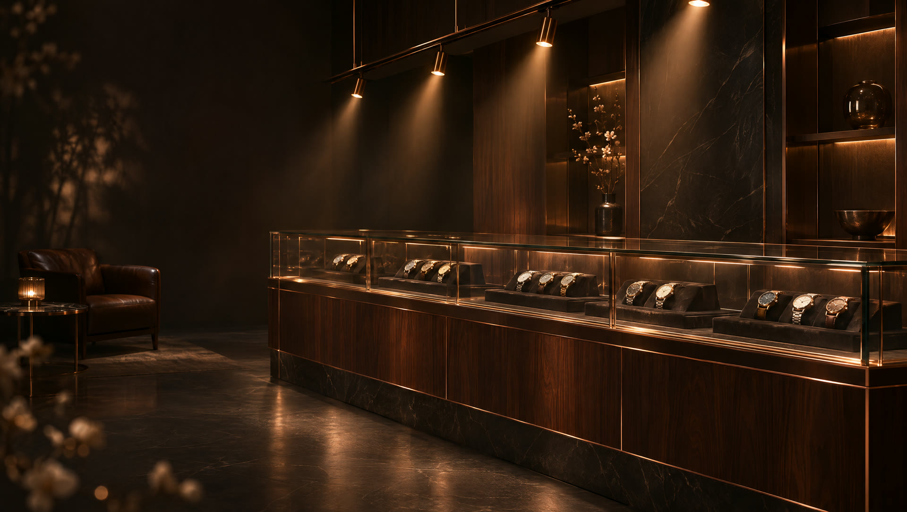

Em destaque
Casio Edifice Preto
Automático, mostrador em carbono forjado e detalhes em ouro rosé.
Preço sob consulta
Tenho interesse
Casio Edifice · Preto
Role a página e monte o relógio, peça por peça.
01 Caixa
A caixa protege tudo o que vem depois. É aqui que a montagem começa.
02 Mecanismo
Sem bateria. Ele ganha corda com o movimento do seu pulso.
03 Engrenagens
Cada roda gira no ritmo exato da outra. É assim que um segundo vira uma hora.
04 Mostrador
O desenho do carbono nunca se repete. O seu mostrador é só seu.
05 Ponteiros
Fáceis de ler num relance, de dia ou de noite.
06 Vidro de safira
A safira fecha o conjunto e deixa a luz entrar.
07 Pulseira
Macia, firme e feita para o uso de todo dia.
Montagem completa
Ele está na vitrine da Clock, esperando o seu pulso.
A vitrine
Uma seleção curta, olhada peça por peça. Gostou de algum? A gente mostra de perto.
Em destaque
Automático, mostrador em carbono forjado e detalhes em ouro rosé.


Edifice Preto
Por dentro
Um relógio automático tem mais de cem peças trabalhando juntas, em silêncio, o dia inteiro.
Experimente
Segure o botão, como quem gira a coroa, e veja o que a Clock garante em cada relógio.
Segure com o dedo, o mouse ou a barra de espaço.
Cada peça da vitrine é original e sai da loja com a documentação.
Você leva a garantia por escrito e sabe com quem falar se precisar.
A pulseira sai da loja na medida certa, sem custo.

A loja
Foto ajuda. No pulso é outra coisa.
Pelo WhatsApp ou pelo formulário, em um minuto.
Separamos os relógios que você quer ver. Sem pressa.
Medida certa, garantia em mãos, pronto para usar.
Perguntas
Sim. Tudo o que está na vitrine é original e acompanha a documentação da peça.
Não. Ele ganha corda com o movimento do pulso. Se ficar parado alguns dias, basta usar de novo e acertar a hora.
Pode e deve. Agende uma visita e prove no pulso, com calma.
Chame no WhatsApp ou envie o formulário. A resposta vem com preço e formas de pagamento.
Contato
Conte qual relógio chamou a sua atenção, tire uma dúvida ou marque a sua visita.
Chamar no WhatsAppO formulário ao lado abre o seu WhatsApp com a mensagem pronta. É só enviar.